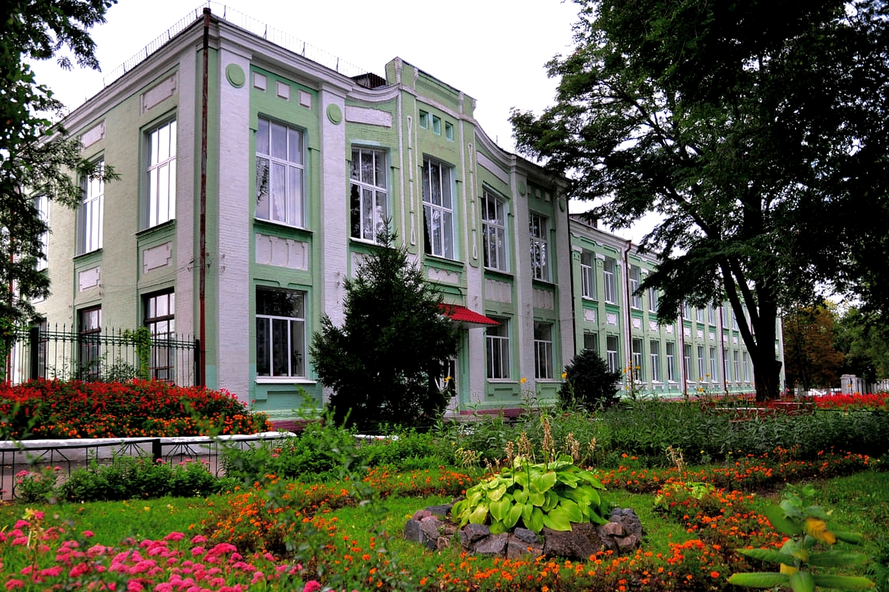

| Коротка інформація | |
| Ліцей №11 | |
|---|---|
|  Фотографія закладу | |
| Країна |  Україна Україна |
| Місто | Новомосковськ |
| Новий тип ЗЗСО | ліцей з початковою школою та гімназією |
| Форма власності | комунальна |
| Тип місцевості | міська |
| Директор | Третьякова Тетяна Миколаївна |
| Уповноважена особа |
Кросікова Ольга Зіновіївна |
| Мова навчання | українська |
| Профілі навчання | історико-філологічний; математичний; філологічний |
| Спроможність закладу освіти (учнів) | 850 |
| Кількість учнів | 718 |
| Кількість персоналу | 45 |
Ласкаво просимо на веб-сайт Ліцею №11 міста Новомосковськ, Україна!
Ліцей №11 - це комунальний ліцей (в минулому колегіум) з початковою школою та гімназією, де знання поєднуються зі створенням майбутнього. Ми розташовані в центрі міста за адресою вул. Г. Зелінського, 5.
В Ліцеї №11 працює професійний, креативний, завзятий педагогічний колектив на чолі з директором Третьяковою Тетяною Миколаївною, який є неодноразовим дипломантом виставок «Сучасна освіта в Україні», «Освіта України», «Інноваційні технології навчання» (м. Київ); Нагороджений відзнакою «Флагман науки та освіти України» та занесений у презентаційно-імеджевий альманах «Флагман освіти та науки України»; Двічі нагороджений золотими медалями на Міжнародних виставках «Сучасні заклади освіти».
Наші викладачі
26 вчителів ліцею мають вишу кваліфікаційну категорію, 14 - педагогічне звання «вчитель-методист», 15 - відзначені подяками та почесними грамотами МОН України, 5 - мають нагрудний знак МОН України «Відмінник освіти», 1 - нагрудний знак МОН України «Василь Сухомлинський».
Наша місія
Наша місія - надати високоякісну освіту та створити стимулююче середовище для розвитку кожного учня. Ми прагнемо виховувати не лише компетентних професіоналів, але і відповідальних громадян, здатних приймати важливі рішення для майбутнього, і тому завжди готові відкрити свої двері для обдарованих та активних учнів, а також креативних вчителів, які люблять додати в процес навчання щось незвичайне та цікаве.
Наша найбільша гордість - учні
Лише за 2022/2023 н.р. учні ліцею зайняли 5 призових місць на II етапі Всеукраїнських учнівських олімпіад з базових дисциплін; переможцями І етапу конкурсу-захисту науково-дослідницьких робіт учнів-членів Малої академії наук України стали 5 учнів. У творчих та спортивних конкурсах різних напрямків взяли участь - 154 дитини та 3 творчі колективи. Переможцями Міжнародних
конкурсів стали 3 учнів, Всеукраїнських - 12; обласних - 6, міських - 118.
Чому саме ліцей №11?
- Досвідчений педагогічний колектив, який завжди готовий допомогти в розвитку ваших знань.
- Сучасна навчальна програма, яка відповідає усім сучасним державним вимогам і навіть перевершує їх.
- Зручна інфраструктура та сучасні класи, обладнані за останнім словом технологій для комфортного навчання.
- Широкий спектр позаурочних заходів, активності та гуртків для розвитку інтересів та хобі учнів.
Приєднуйтесь до нас
Ми завжди відкриті для співпраці з батьками та громадою. Наш педагогічний колектив активно веде сторінки в соцмережах, проводить разом з учнями різноманітні заходи та волонтерські акції, організовує факультативні заняття. Разом ми створюємо освітню спільноту, в якій кожен має можливість розвиватися та рости. Слідкуйте за нашими останніми новинами та досягненнями на цьому веб-сайті та в соціальних мережах (вони вказані в кінці сторінки). Разом ми будуємо майбутнє наших дітей!
Ліцей №11 - ваш шлях до успіху та розвитку. Будьте частиною нашої освітньої родини!